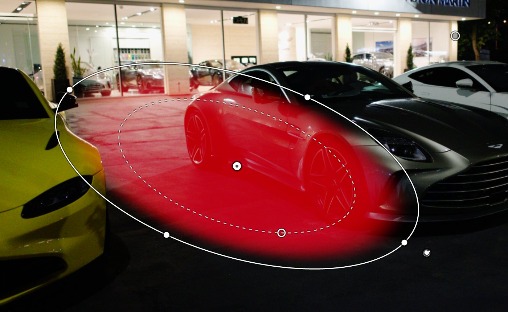
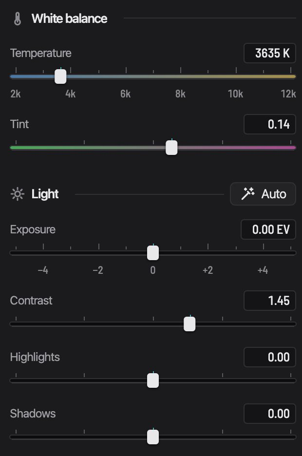
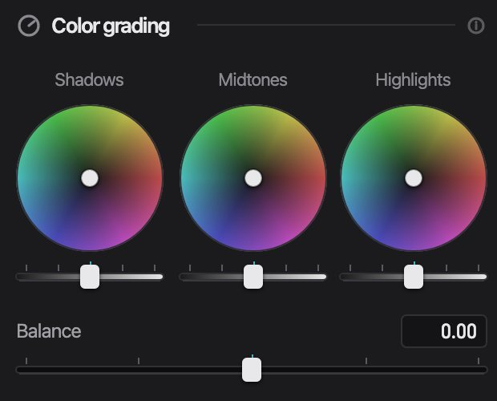
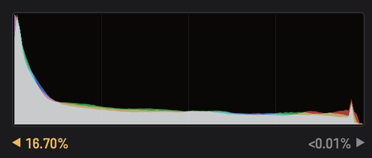
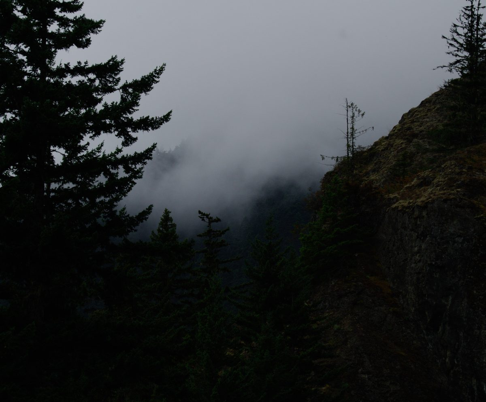
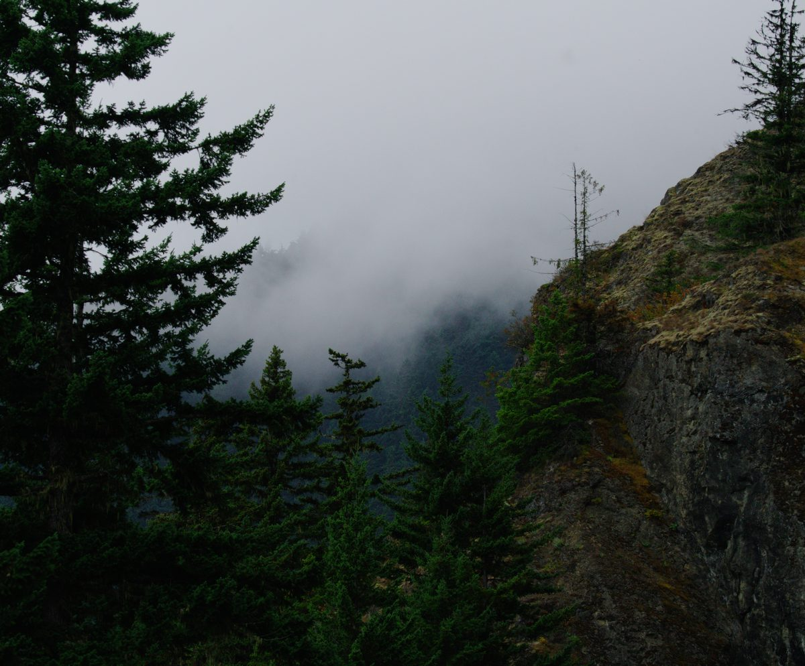

Fast RAW editing for free
A RAW photo editor for Apple silicon Macs. Free, with no account. In alpha.
Download for macOSmacOS 14 or later · Apple silicon · Free
Source on GitHub
- Source on GitHub
- No account
- No subscription
- Nothing uploaded
- 1,558 lenses corrected
Under 20 ms. Drag a slider and the photo keeps up.
The 95th percentile over an exposure drag on a 42 MP raw file, on a MacBook Air M4.






Develop what the camera caught. Move over the frame to see it.
Opens raw files from most cameras, corrects 1,558 lenses, and exports JPEG, TIFF and PNG.
DSC09787.ARW
DSC09787.xmp
Your originals stay untouched. Edits are a 2 KB text file beside them.
Nothing is uploaded, and any app that reads XMP can read your edits.
In the current build. And what is not, yet.
Tone and color
- Exposure, contrast, highlights, shadows, whites, blacks
- White balance, color grading, tone curves
- Film looks from any
.cubefile - One-click auto-enhance
Detail and repair
- Haze removal, clarity, shadow recovery
- Noise reduction, sharpening, color mixer
- Spot and blemish removal
- Film grain, and a vignette you can dial in
Geometry
- Crop, straighten, rotate
- Distortion and vignetting for 1,558 lenses
- Perspective and keystone correction
Masking
- Gradient, radial, brush, brightness and color masks
- Selecting a subject, a person or a sky
- Masks combined (add, subtract, intersect) and feathered to real edges
Library
- Browsing a folder of 300 frames without waiting on it
- Saved versions of a photograph, to come back to later
- Presets, and copying settings between photos
Export
- Export at 8 or 16 bits, resized, sharpened for screen or print
- Export with your location stripped by default
Not yet
- Highlight reconstruction: the region fill runs and has a slider, but the detail transfer and the edge falloff are not built
- Fujifilm X-Trans sensors
- Windows
- An assistant that proposes edits for you to approve
Every filter is built from a published paper. Read the sources.


Try the alpha
Free to download, no account to make, and the source is on GitHub.